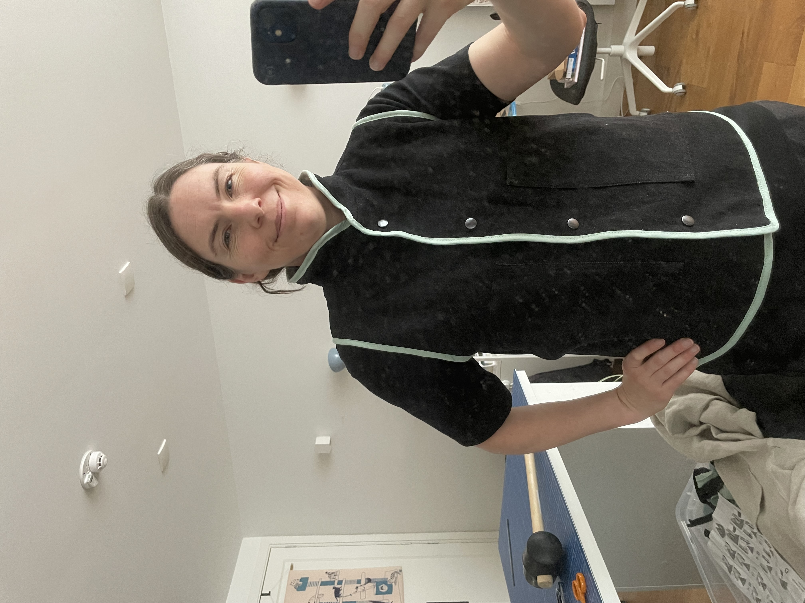
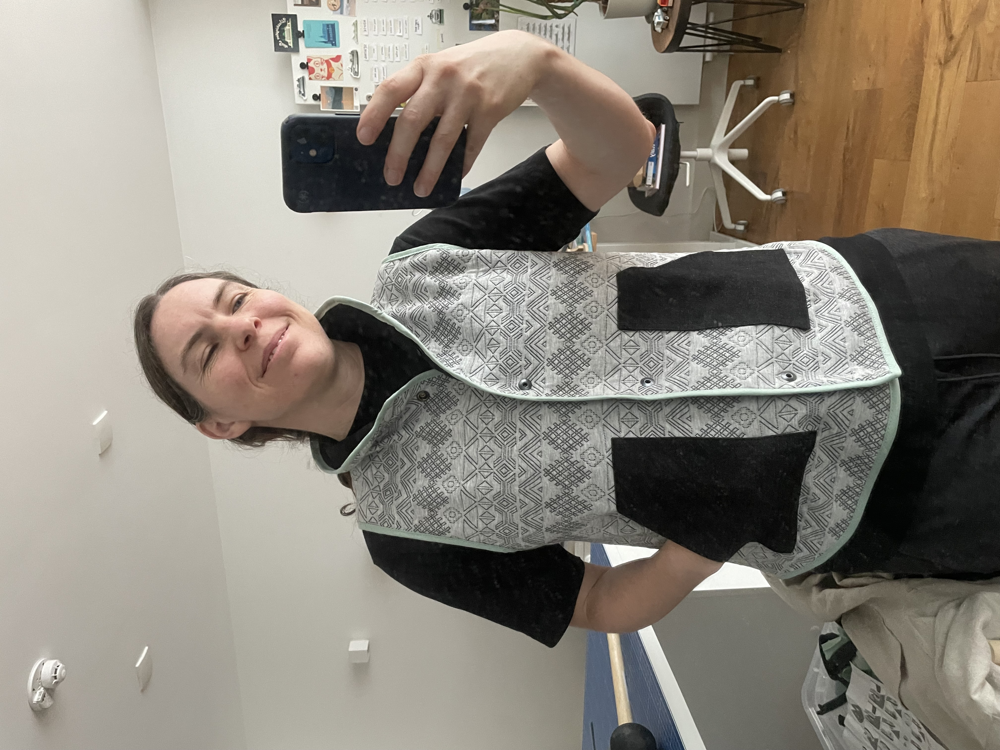
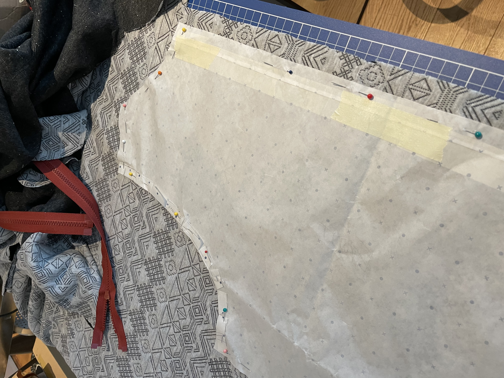
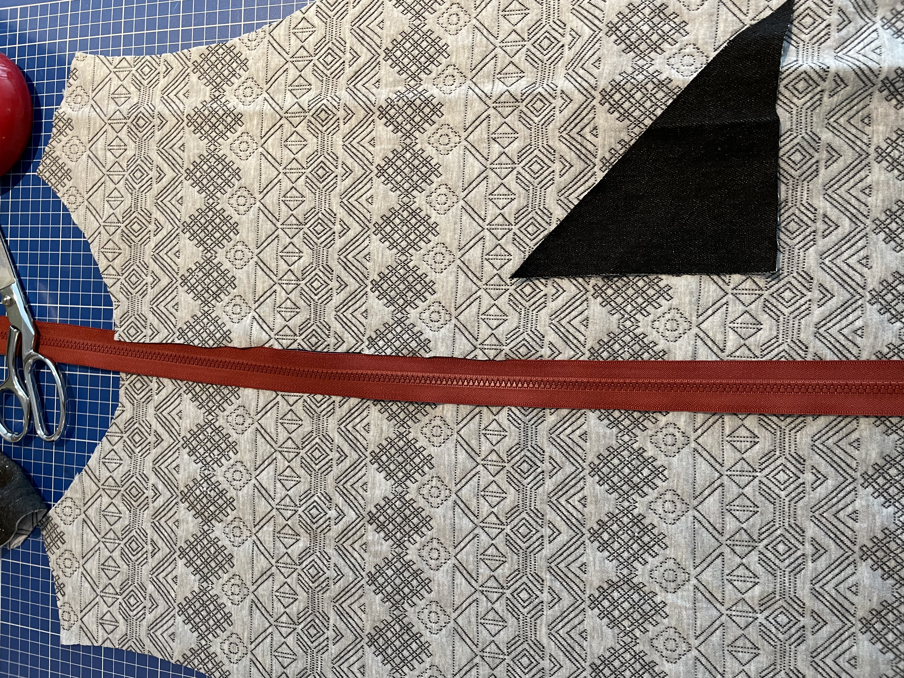
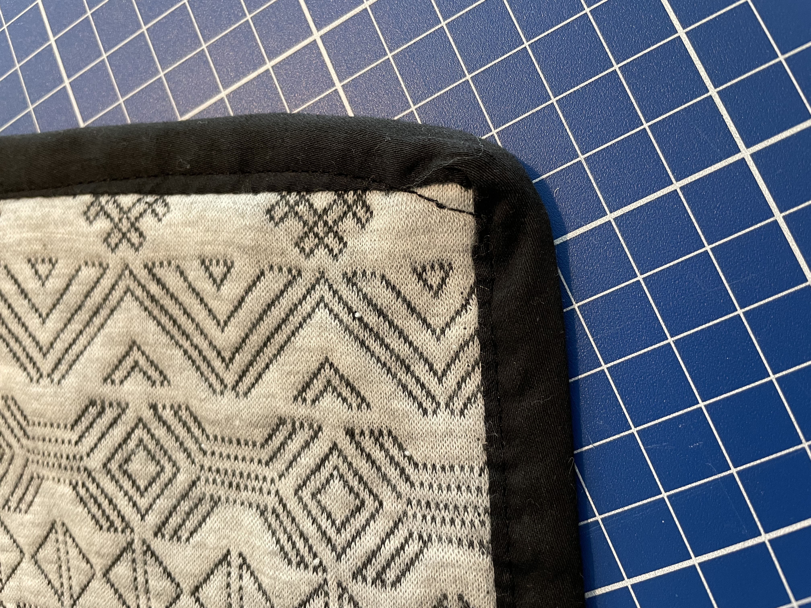
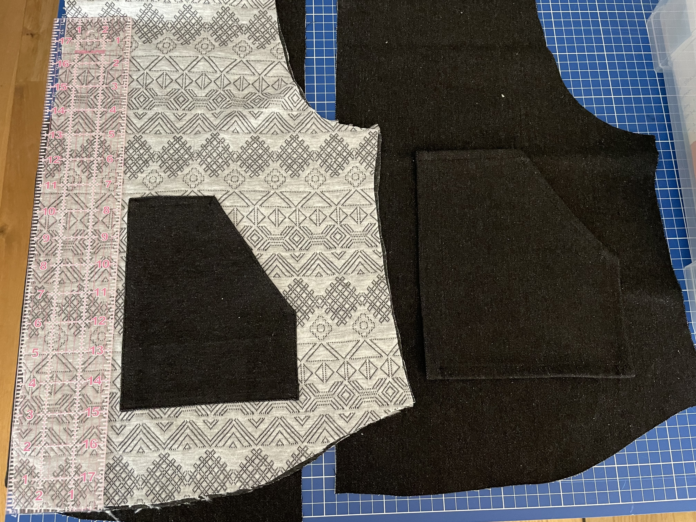
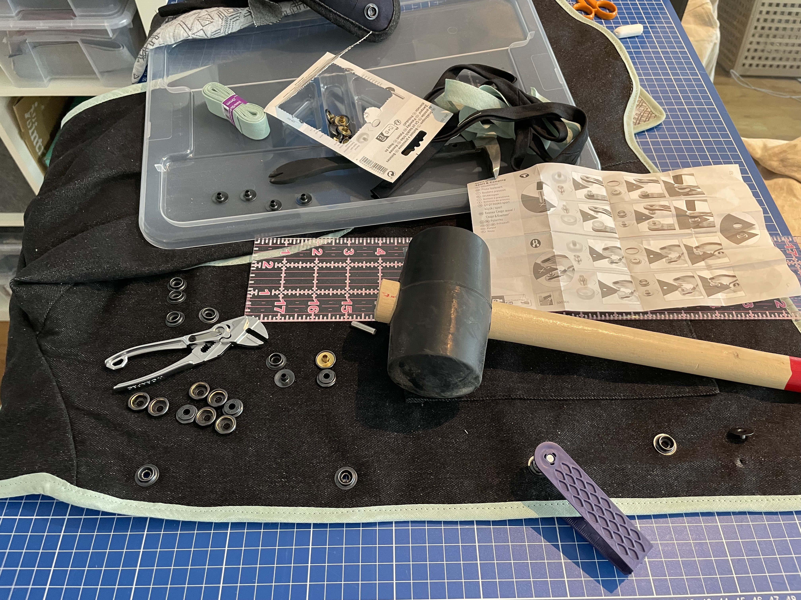
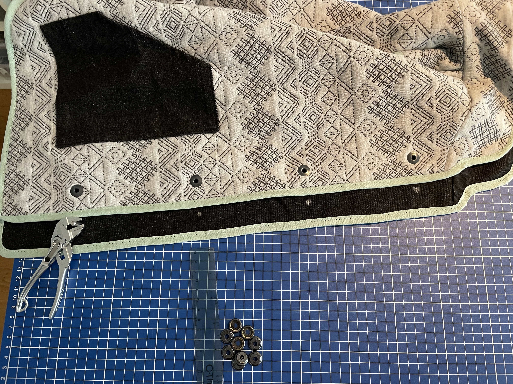

Sewing: Reversible Vest
The reversible vest turned out great, despite some bumps in the road. I’m particularly happy about the mint green bias binding on the edges. In fact, I wish I’d also added it to the open edge of the pockets, or perhaps the whole outline of the pockets.
Sometimes I make things because I want a certain thing. But sometimes, this will probably resonate with other sewers, I have a fabric I like and I want to make something with it. The light grey knit with a darker grey pattern was a gift from a friend about 4 years ago when I was starting to sew again. This is one of those patterns that is almost more of a texture. This knit is probably part cotton, part polyester and is also very thinly quilted, again probably with polyester filling. The opposite material is a black denim.


Prior to this, I’ve made three sweatshirts and one collared shirt. I feel pretty comfortable with putting the vest part together but the collar can still be a little tricky.
All in all, this probably took 1-2 weeks but the work was spread out over 9 months. (TBH, I lost a lot of motivation during the heat of summer. Who wants a vest in summer?)
The Pattern
I made a pattern by tracing an existing vest and adjusting it to fit better (it was too small). I used a couple other jackets I like to check measurements for shoulder width (also a style choice for these to sit in a bit from my actual shoulder), chest width, hip width, and length.
There are 4 pattern pieces: front half, back half, collar, and pocket.

Colors
I experimented with colors a bit. I wanted a highlight of color. I have a variety of zippers of different colors - I love a contrast zipper. Reddish colors appealed to me but I went with the mint.

Edge Binding
I opted to bind the edges instead of hiding seams on the interior of the vest. This gave me just the right amount of color highlight across the whole vest. I’m a fan of contrast edgebinding for a lot of clothing.
I tried out black denim first, thinking that I would use each of the primary fabrics as the binding on the opposite side. But then I realized that the effect would only work for the pockets because well, both sides share the same edge along the arms, collar, and bottom edge.
It was super handy to mock this up on an extra piece of material to see how difficult it was to edge bind with denim (quite) and how it looked over the knit material.
Binding an edge, though, takes some practice. I’m getting better but there are always places where I go a little close to the edge and get a visible thread on the other side. On the light side, it doesn’t show as much but the mint thread is higher contrast on the dark side.
In this photo, you can see an earlier test of a black binding and a small mistake where the thread crosses outside the binding. (Isn’t the mint binding much nicer??)

Pockets
The most important feature of any clothing item: pockets.
I needed to iterate on the size here because my technique for hemming the edges took up more material than expected and made the pocket a bit too small.
These work pretty well but somehow the alignment of the pockets between the sides is off - the pockets on the light side are a little lower than the dark side - and as a result the light side is a little more comfortable. Maybe I mixed up the measurements.
Here are the two different pocket sizes:

Closures
You know, the zipper color options are pretty limited for double sided zippers. I looked for a long time for a mint green zipper with mint green tape. They exist, but only as one-sided zippers.
I thought, ok, the important part of a double sided zipper is that the zipper pull has a loop that allows the pull to slide over to the opposite side of the zipper head. Maybe I can just replace the zipper head. It is definitely hard to find a mint green reversible zipper head. Maybe paint it? I don’t really want to go through all the iterations of trying to find the right color paint and to learn how to paint a tiny thing like that well. Maybe 3D print it? No, no, wow, I don’t have a printer that can do detail that fine, even if it could be sturdy enough to be pushed and pulled over hard plastic teeth. That sounds like another deep side project.
Other options for closures: buttons, loops & toggles, string ties, snaps.
Snaps seemed fun and a good match for the style. However, it took me a good hour plus to wrap my head around how they might work for a reversible garment. I tested out the snaps to make sure I understood which sides went together. Then I had to make a paper mockup and label the sides A, B, C, D, and fold it around different ways to make sure that B-C and A-D matched up in either direction. Got in some good shape rotator practice there.
Once I trusted that I could assemble the correct parts for each snap, it was an easier process than I expected. So far though, the downside is that they rattle a tiny bit which implies that I didn’t smash them with the mallet enough. I’m also a bit scared that I will rip them out of the cloth trying to open one - I’ll report back if that happens.
Thanks for reading!


Language Note
“vest” means a coat with arms in Dutch. In UK English, a “vest” is a formal button vest to wear with suits whereas a vest like this is called a “gilet” (zhee-lee), borrowed from French.